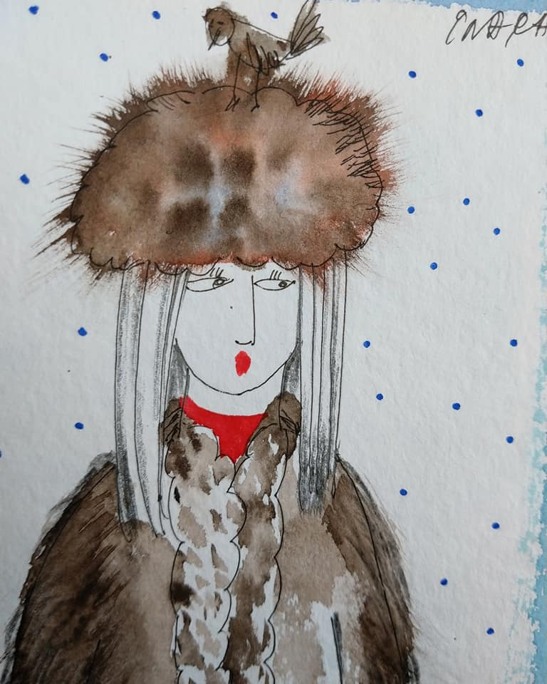
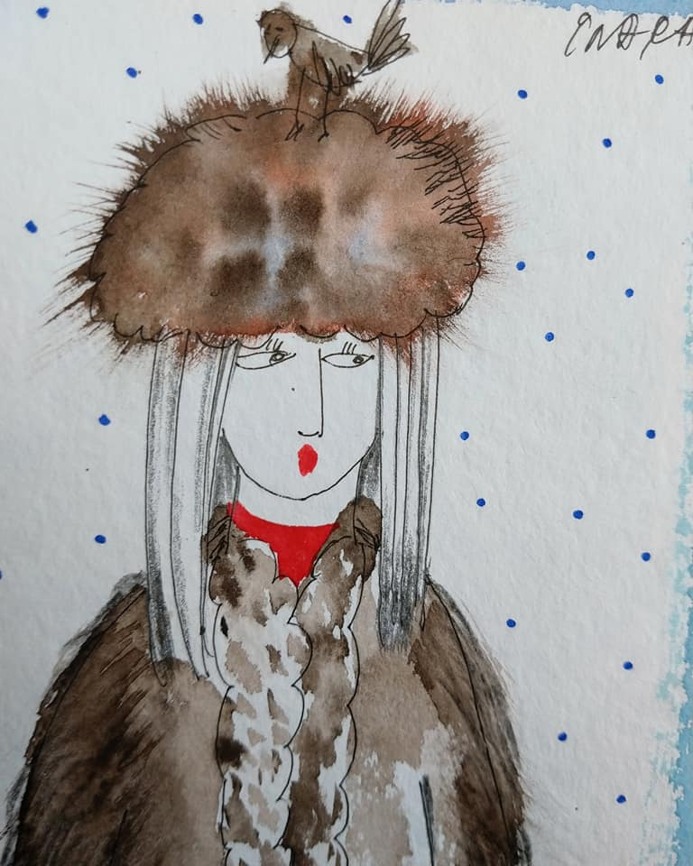

Solo Exhibitions
2017 Mark Rothko Art Center, Daugavpils. Latvia
2017 Kraziai art rezidence, Kraziu Motiejaus Kazimiero Sarbievijaus kulturos centras, Lithuania
2017 Latgale art and craft center/ Livani glass museum, Latvia
2017 “ 92 Degrees Coffe”, Liverpool
2014 “Life love art” Galleri Gl. Lejre, Denmark
2014 Latgale Central Library, Daugavpils, Latvia
2013 Ecco Center, Denmark
2009 Horsens, Denmark
2009 Daugavpils University, Latvia
2009 “Promen” Gallery, Daugavpils, Latvia 2008, 2005, 2002, 1999, 1997 Galleri GL. Lejre , Denmark 2007 Langes Ma-
gasin, Frederikssund ,Denmark
2005 “Lykkens Galocher”, Det Danske Kulturinstitut, Riga, Latvia
2004 Russian Gallery, Vilnus, Lithuania
2004 “Maksla XO” Gallery, Riga, Latvia
2004 13th International Festival of Arts, “Slavianski Bazaar in Vitebsk, Belarus
2003 AUL Gallery, Union of Latvia, Riga, Latvia
1999, 1997,1996 Daugavpils, Latvia
1991 “Krasts” Gallery , Rigas Modes Hall, Riga, Latvia
Group exhibitions:
2017 Mark Rothko Art Center, Daugavpils, Latvia
2017 Vitebsk Central Museum of Modern Art, Belarus
2017 A. Suna art Gallery ,Riga, Latvia
2016 ”Mixed Media”, Gl. Lejre, Denmark
2016 Mark Rothko Art Center, “Untaitled”, Daugavpils, Latvia
2016 “Bann” Art
2016 Art festival, France
2016 Axposition Assotiation “Az”arts, Chateau d ́Aubenas (Ardeshe), France
2015 International group exhibition, Axon Cable, Montmirail, France
2015 International Festival Art of Dolss “NukuKunst”, Tallinn, Estonia
2015 Mala Makslas Centrs, Daugavpils, Latvia
2015 Mala Makslas Centrs, Livani, Latvia
2015 Mark Rothko Art Centre, “Klaunade”, Daugavpils, Latvia
2014 Rokiskis Regional Museum, Lithuania
2014 Art Herning, Galleri GL.Lejre, Denmark
2012 International group exhibition, Mark Rothko Art Centre, Daugavpils, Latvia
2012 Art Herning, Gl. Lejre, Denmark
2009 Museum Marc Shagall, Vitebsk, Belarus
2009 Project “Akvarelis.Akvarelists”, Rezekne, Latvia
2009 “No gleznas izkapis”, with artist group “Kapec 5”, Daugavpils, Latvia
2008 Project “Gleina”, Daugavpils, Latvia
2007 Gallery “Manss”, Ekabpils, Latvia
2007 Art Museum, Madona, Latvia
2007 Group exhibition in Babrujsk, Homel, Minsk, Belarus
2007 The International exhibition in Marc Chagall Art Center, Vitebsk, Belarus
2007 International Graphic Festival”, St.Peterburg, Russia
2006 International Bienale of Graphic, ”Maneze” Hall, St.Peterburg, Russia
2006 Project A.Maevsky, Art Hall ,Riga, Latvia
2005 “Mark Rothko”, International Plein Air, Daugavpils, Latvia
2005 “MakslaXO” Gallery, Riga, Latvia
2005,2003,2001,1999 Art Herning, Galleri Gl. Lejre, Denmark
2004 City Museum, Preili, Latvia
2004 City Museum, Kraslava, Latvia
2004 Art Days, Daugavpils, Latvia
2002 Galleri Gl. Lejre, Denmark
2001,2000,1999,1998 Art Copenhagen, Galleri Gl. Lejre, Denmark
1999 Art Days, Daugavpils, Latvia
1999 Anger, France
1999 Dusetas, Lithuania
1999 Ribnic-Damg., Germany
1998 “ X år” ,Galleri Gl. Lejre, Denmark
1998 Zarasai, Lithuania
1997 II International Marc Shagall Bienalle, Vitebsk, Belarus
1993 “Plein Air in Sweden”, Riga, Latvia
1992 Kunstmuseum, Visby, Sweden
1992 Artists Union, Finspong, Sweden
1991 “Artist from Daugavpils”, Rigas Modes Hall, Riga, Latvia
1990 “Autumn 90” Exhibition Hall of States Museum of Art Arsenals, Riga, Latvia
 
